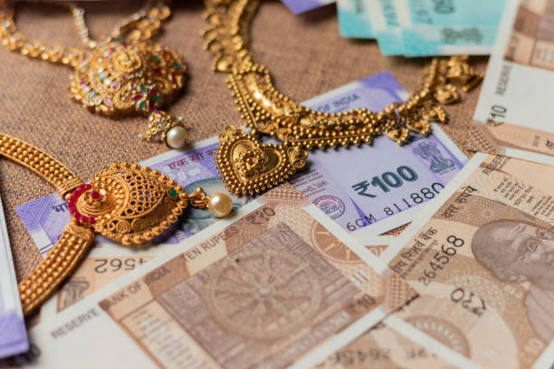
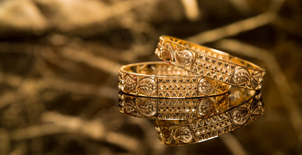
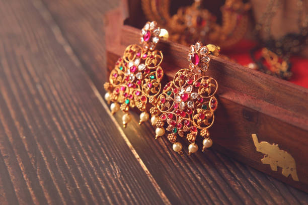

CSS
Home Gallary Contact
Introduction
Jewellery (or jewelry in American English) consists of decorative items worn for personal adornment, such as brooches, rings, necklaces, earrings, pendants, bracelets, and cufflinks. Jewellery may be attached to the body or the clothes. From a western perspective, the term is restricted to durable ornaments, excluding flowers for example. For many centuries metal such as gold often combined with gemstones, has been the normal material for jewellery, but other materials such as glass, shells and other plant materials may be used.




Other commonly used materials include glass, such as fused-glass or enamel; wood, often carved or turned; shells and other natural animal substances such as bone and ivory; natural clay; polymer clay; Hemp and other twines have been used as well to create jewellery that has more of a natural feel. However, any inclusion of lead or lead solder will give a British Assay office (the body which gives U.K. jewellery its stamp of approval, the Hallmark) the right to destroy the piece, however it is very rare for the assay office to do so.Beads are frequently used in jewellery. These may be made of glass, gemstones, metal, wood, shells, clay and polymer clay. Beaded jewellery commonly encompasses necklaces, bracelets, earrings, belts and rings. Beads may be large or small; the smallest type of beads used are known as seed beads, these are the beads used for the "woven" style of beaded jewellery. Seed beads are also used in an embroidery technique where they are sewn onto fabric backings to create broad collar neck pieces and beaded bracelets. Bead embroidery, a popular type of handwork during the Victorian era, is enjoying a renaissance in modern jewellery making. Beading, or beadwork, is also very popular in many African and indigenous North American cultures.